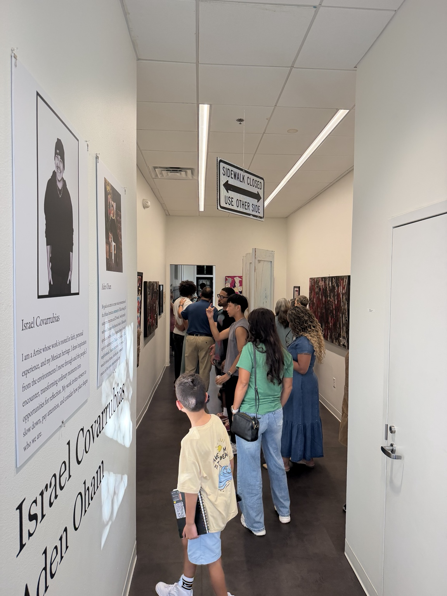
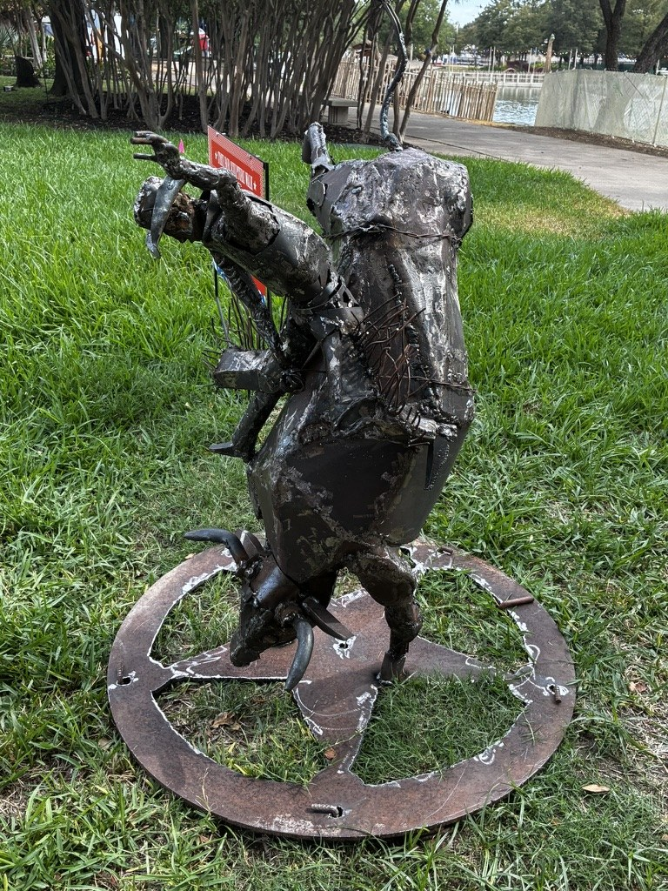
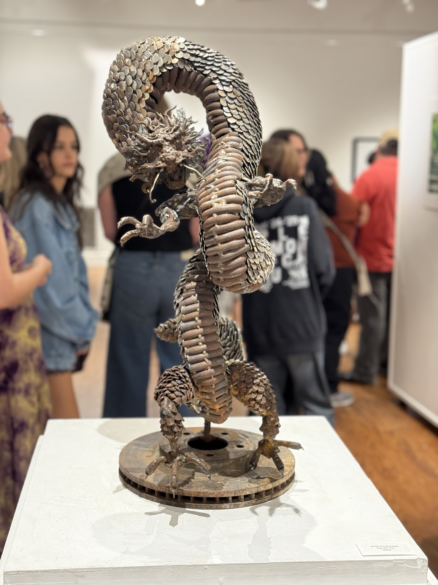
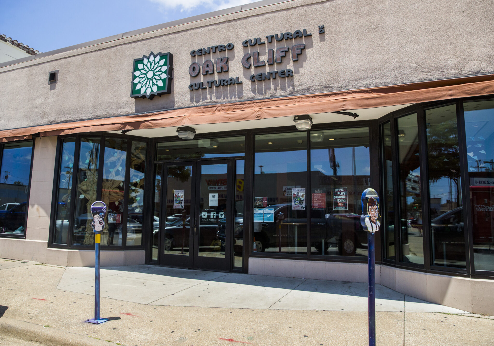
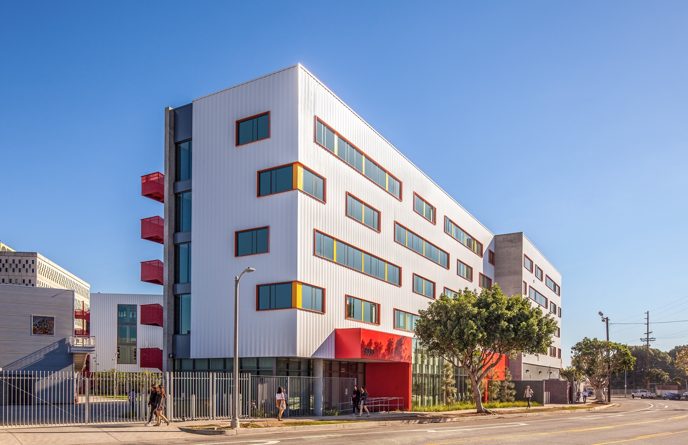

Defenders
Collaborative exhibition with Aden Oham at Creative Arts Center of Dallas. Opening reception August 14, 2026.

Let Me Be
Featured Texas artist in the State Fair Sculpture Walk.

Senior Exhibition
Senior exhibition, Booker T. Washington High School for the Performing and Visual Arts.

Young American Talent
Second-place award recipient in the Young American Talent exhibition.

Otis Summer of Art
Summer program and exhibition; attended on a sculpture scholarship.
Additional Exhibitions
Selected Works, Hudson Gallery (2024); Group Show, Goodrich Gallery (2025); Cedars Open Studios (2025).